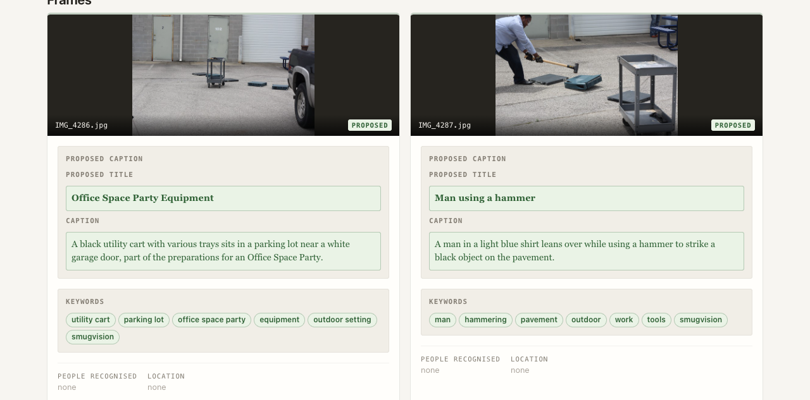
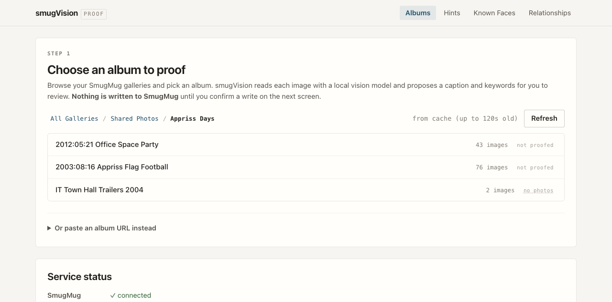
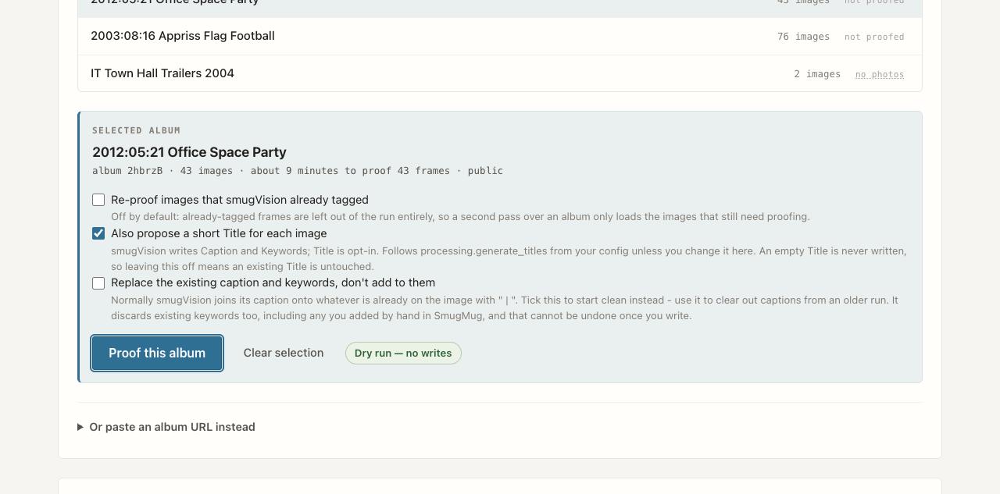
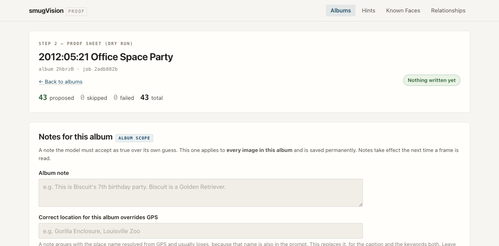
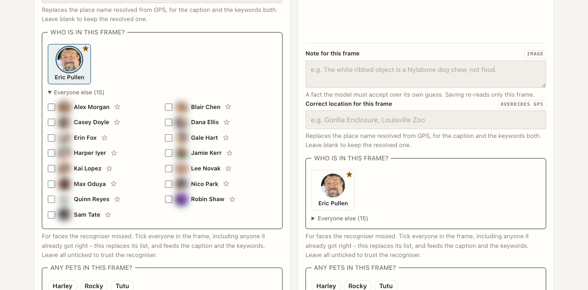
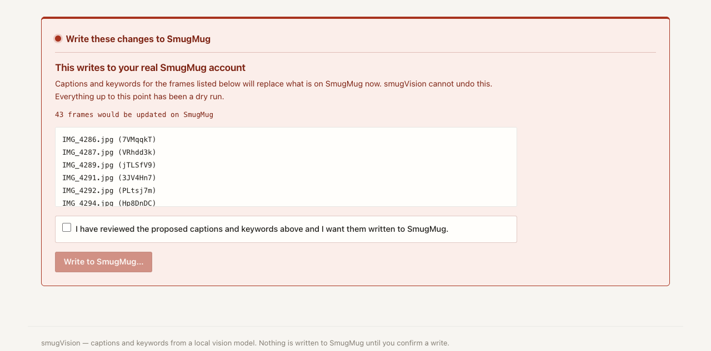
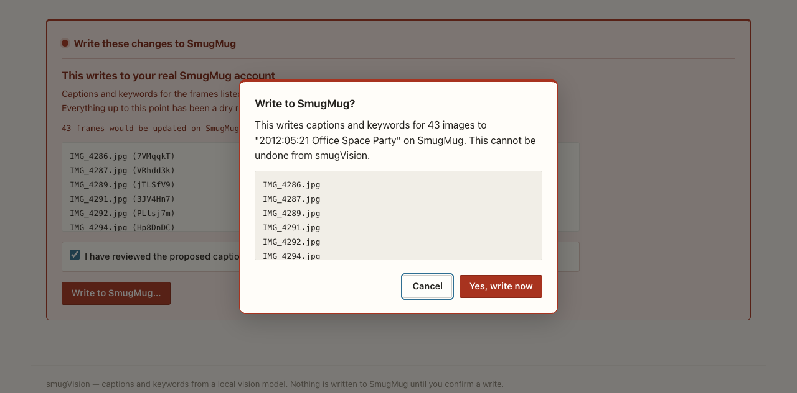
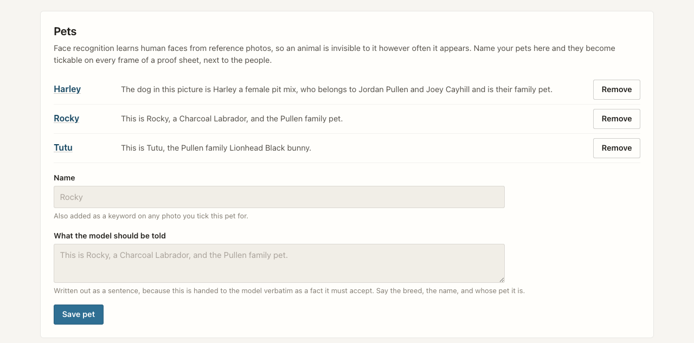

Nothing leaves your network
Inference runs against a local Ollama model of your choosing. Your photographs, the faces in them and the names you attach are never uploaded to a third-party API. The only host smugVision talks to is SmugMug itself.
smugVision reads a SmugMug album with a vision model running on your own machine, and proposes a caption, a title and a set of keywords for every frame. You proof the whole sheet before a single byte reaches SmugMug.

Why it exists
A vision model describes what a photo looks like, not what it is. It cannot know that the ribbed white object is a Nylabone rather than a cracker, or that the girl in the pink hat is your daughter. So smugVision lets you say so — and treats what you say as ground truth.
Inference runs against a local Ollama model of your choosing. Your photographs, the faces in them and the names you attach are never uploaded to a third-party API. The only host smugVision talks to is SmugMug itself.
Point it at a folder of reference faces and recognised people flow into the caption, the keywords and a relationships lookup. When the recogniser misses somebody, you name them yourself and your list wins outright.
GPS is read from the SmugMug API first and EXIF second, then resolved to a place name — through your own named locations before any geocoder is consulted. Wrong place? Override it for the caption and the keywords both.
A CLI for batch work and a web proof sheet for review. Both drive the same processor, so anything true of one is true of the other — the UI is a window onto the pipeline, not a reimplementation of it.
How it works
Every image takes the same path. Context is gathered first, your own assertions are added last so nothing dilutes them, and the model is asked once.
smugvision marker tag are left out of the run entirely.
The web proof sheet
smugvision-web binds to 127.0.0.1 and reads the
same config as the CLI. Every run is a dry run.
Browse the folder tree one level at a time. Each album carries a badge telling you whether smugVision has been there before, so a second pass is never a guess.
| Badge | Meaning |
|---|---|
✓ proofed | Every photo already carries the marker tag |
7 of 11 | A partial pass — a run covers the remaining four |
not proofed | Nothing done yet |
no photos | The album holds only videos, which are never proofed |


The panel counts the frames the run will genuinely touch, not the size of the album — already-tagged frames are excluded before the estimate is made.

Under every card you can add a note, override the location, say who is in the frame and tick which pets appear. Your most-used people sit as large tiles; everyone else waits in a drawer. The ☆ pins somebody to the top row for good.
Save note & re-read re-runs that one frame. At album level, Save & re-read every frame applies a new album note across the whole run, one frame at a time, with a stop button that finishes the frame in flight.

The write path
The write panel is the only part of smugVision that touches your SmugMug account, and it is the only thing on the page rendered in darkroom red. It stays collapsed until you go looking for it.
After a clean write you land back on the album list, at the folder you started from, with that album's badge brought up to date. A partial write keeps you on the sheet — that is precisely when you need to see what failed.


Ground truth
Everything in this section is you asserting a fact, and every one of them
outranks the model's own reading of the image. It all lives in
~/.smugvision/hints.yaml, is safe to edit by hand, and is
read by the CLI and the web UI alike.
Notes — three scopes, which accumulate
global: "Ada and Sam are our children." albums: Ab3kZq: "Biscuit's 7th birthday party." images: Xy7NpQr: "The white ribbed object is a Nylabone, not food."
Location, people and pets — most specific scope wins
locations: images: Xy7NpQr: "Gorilla Enclosure, Louisville Zoo" people: images: Xy7NpQr: [Ada_Rivera, Nina_Rivera] pets: images: Xy7NpQr: [Biscuit]

Get started
You need Python 3.9 or newer, Ollama with any vision-capable model pulled, and a SmugMug account with API credentials.
1 — install
# any vision model in `ollama list` will do $ ollama pull llama3.2-vision $ git clone https://github.com/ericpullen/smugVision.git $ cd smugVision $ pip install -e .
2 — configure and authorise
# interactive setup -> ~/.smugvision/config.yaml $ smugvision-config # OAuth 1.0a dance -> user token + secret $ smugvision-get-tokens
3 — try it without writing anything
# the safest way to exercise the whole pipeline $ smugvision --gallery <album_key> --dry-run # or work from a gallery URL $ smugvision --url "https://site.smugmug.com/.../n-XXXXX/album" --verbose
4 — or open the proof sheet
$ smugvision-web # http://127.0.0.1:5050 - local only
--dry-run walks the entire pipeline and prints what it
would do without touching your account. The web UI is a dry run by
construction — there is no mode in which it writes without being
told to twice.
Under the hood
There is no allow-list. Every Ollama vision model maps to one generic
adapter, so using a new one needs no code change — just set
vision.model in your config.
dlib by default, InsightFace as an optional extra. Both normalise to a single confidence scale, and the encoding cache records which backend produced it so the two can never be compared against each other.
A processed image carries the smugvision keyword. The test
is separator-aware, because SmugMug returns the whole keyword list as
one semicolon-joined blob.
The SmugMug client, vision model, cache and face recogniser are all constructor-injected on the processor. That seam is what lets the web UI and tests reuse the pipeline rather than reimplement it.
Config, hints, pets, named locations, relationships, reference faces
and the cache all sit in ~/.smugvision/. Nothing inside the
checkout is authoritative at runtime.
Heavy optional dependencies are imported behind availability flags. A missing face-recognition install disables that feature with a log line rather than failing the run.